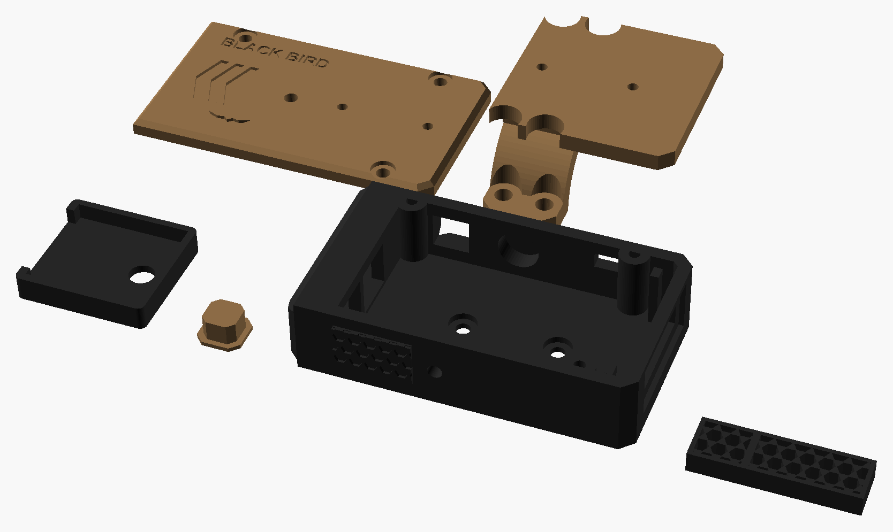

Mede até 100 m com erro de ±1 m e avisa se o alvo está perto demais para o DMR. Prévia visual com medidas reais em milímetros.
No modo "tamanho real", 1 mm do desenho = 1 mm na sua tela (depois de calibrar).
Encoste um cartão de crédito/débito na tela e mova o controle até o retângulo ter exatamente o mesmo tamanho (85,6 × 54 mm).
px/mm
cartão 85,6 × 54 mm
01Visão geral
76 × 44 × 19unidade deitada, com capuz anti-BB de 6 mm (mm)
3 – 100 mfaixa de uso (o sensor vai até 1000 m)
± 1 mprecisão típica desse tipo de laser (confirme no manual)
≈ 80 gpeso estimado
≈ 5 hmedindo sem parar (estimativa)
R$ 339–422custo com o laser JC02-1 (sem frete dos itens BR)
02Por que este sensor
Sensor
Alcance anunciado
Em alvo escuro (camuflado)
Serve para 100 m?
TF02-Pro (LiDAR)
40 m
≈ 13 m
Não
TF03-100 (LiDAR)
100 m (alvo claro)
40 m (10% de refletividade)
Não, em pessoas
Módulo laser de longo alcance (JC02-1, AliExpress)
600 – 1200 m
Sobra margem a 100 m
Sim
O módulo de 905 nm é o sensor do aparelho: ele dispara um pulso de laser infravermelho, mede o tempo que a luz leva para voltar e manda a distância pronta para o ESP32 pela porta serial (UART). É o mesmo tipo de peça que vai dentro dos telêmetros de caça e golfe, Classe 1 (seguro para os olhos). Não existe vendedor nacional desse módulo, então ele vem de fora (AliExpress ou Alibaba). Os preços estão na seção de custos.
03Montado no rifle
Vista lateral esquerda da sua Rossi Shadow MK16 URG-I 13.5 com a Red Win 1-6×24 na Geissele Super Precision de perfil alto (centro da luneta a 1,93″ ≈ 49 mm do trilho). O telêmetro fica em cima do anel dianteiro, numa tampa de anel impressa que substitui a tampa original, como um ROF-90.
O telêmetro não precisa de abraçadeira. A tampa de cima do anel dianteiro da Geissele é trocada por uma tampa impressa que já tem a base da caixa, no mesmo esquema do ROF-90, e ela usa os parafusos originais da Geissele. A caixa deitada (19 mm) fica centrada para a frente do anel, por cima da objetiva, e termina antes das torres. O topo dela fica cerca de 93 mm acima do trilho. Sem micro dot, o topo da luneta é todo do telêmetro. O laser fica uns 32 mm acima do eixo da luneta, o que é desprezível: alinhado a 50 m, o erro a 20 m é de uns 2 cm. O único comando é o botão liga/desliga com trava, na lateral esquerda, e o USB-C de carga fica no mesmo lado.
04Unidade: 3 vistas
O laser vai deitado, com as duas lentes lado a lado, num berço com pivô de borracha na frente. Atrás dele ficam 2 parafusos M3 com mola: o de elevação entra por cima (na tampa) e o de deriva pela lateral direita. Atrás do laser, em camadas, vão a bateria fina 503040 (5 mm) no fundo, a ESP32-C3 SuperMini por cima dela e o TP4056 por cima de tudo, com o USB-C saindo na lateral esquerda: 5 + 3,5 + 4 = 12,5 mm, dentro dos 15 mm internos. A tela 0,91″ fica em pé na face traseira, logo acima da ocular. O botão liga/desliga com trava (8 × 8 mm) fica na lateral esquerda, perto da frente. Por baixo, a caixa é parafusada (2 M3) na tampa impressa do anel dianteiro da Geissele.
05Telas
OLED 0,91″ de 128 × 32 pixels, baixo e comprido para caber na caixa deitada. No modo "tamanho real", as telas aparecem com a área visível real do display: 22,4 × 5,6 mm.
Alvo dentro da zona: distância + marca do retículo
Abaixo da distância mínima: pisca
Sem retorno (céu, alvo fora de alcance)
Embaixo fica uma barra de 0 a 100 m. A parte hachurada é a zona proibida, abaixo de 20 m por padrão (dá para ajustar), e o traço cheio marca onde o alvo está. O ícone de bateria fica ao lado do "m". "MARCA 2" quer dizer: mire com a 2ª marca BDC abaixo da ferradura vermelha do retículo da sua Red Win. Cada distância aponta uma marca, numa tabela que você monta testando o seu DMR. Os números acima são só exemplos.
06Como funciona
Situação
Resultado
Aperta o botão liga/desliga
Liga em cerca de 2 s e começa a medir sozinho. Não existe botão de medir.
Ligado
Mede sem parar, de 1 a 3 vezes por segundo, e mostra a mediana das 3 últimas leituras para o número não ficar pulando
Alvo abaixo da distância mínima
"MUITO PERTO" piscando
Sem retorno do laser
Mostra "SEM LEITURA" e mantém a última distância válida por 2 s, para não piscar à toa
Alvo na zona liberada
Mostra a distância e qual marca BDC do retículo usar (MARCA 0 = ferradura, MARCA 1, 2, 3…), conforme a sua tabela
Bateria fraca
Ícone de bateria pisca abaixo de 15%
Configuração
Ao ligar, o ESP32 abre por 30 s uma rede Wi-Fi com uma página no celular para ajustar a distância mínima, a tabela de hold e o brilho
07Alinhando o laser com a luneta
A 100 m, um desalinhamento pequeno já faz o laser medir o arbusto ao lado em vez do alvo. Por isso o berço tem ajuste. O laser é invisível, então o alinhamento é feito pela leitura:
Escolha um alvo estreito (poste ou tronco) a uns 50 m, com o fundo bem mais longe.
Apoie o rifle, ligue o telêmetro e mire o retículo no centro do poste. Ele já mede sozinho.
Se a leitura pular para a distância do fundo, o feixe está fora do poste. Gire os parafusos de elevação e deriva até ela ficar estável na distância do poste.
Confirme num alvo a 100 m.
08Proteção da lente contra BB
As lentes do laser ficam viradas para o lado de onde vêm os tiros, então precisam de proteção. Só que nem toda proteção funciona com laser:
Proteção
Funciona?
Por quê
Acrílico transparente na frente
Não
O pulso do laser bate no acrílico, uma parte reflete direto para a lente de recepção e o sensor mede essa reflexão: aparece uma distância falsa de poucos centímetros, ou o alcance cai muito. Além disso, o acrílico trinca com o impacto e solta lascas.
Policarbonato transparente (1–2 mm)
Só com cuidados
Aguenta BB (é o material dos óculos de proteção), mas tem o mesmo problema da reflexão. Só funciona com uma janela separada para cada lente, uma divisória preta encostada na janela, janela inclinada uns 5° e sempre limpa. Arranhão, poeira e chuva na janela pioram a reflexão. Fica como plano B, e precisa ser testado.
Kill flash comercial
Não serve
É feito para o diâmetro da objetiva da luneta, não para o laser. A ideia, porém, é a certa.
Capuz + grade tipo kill flash impressa (escolhida)
Sim
Não tem superfície transparente, então não há reflexão para enganar o sensor. Os favos de 3 mm não deixam passar uma BB de 6 mm. A grade perde uns 30% da luz na ida e na volta, o que reduz o alcance máximo de ~600 m para algo em torno de 400 m. Para usar até 100 m, ainda sobra muito.
A caixa ganha um capuz de 6 mm na frente (de 70 para 76 mm de comprimento). As lentes ficam recuadas dentro dele, e a boca do capuz é fechada por uma grade de favos hexagonais de 3 mm, com 4 mm de espessura e paredes de 0,6 mm, impressa em PETG preto fosco (o preto absorve o infravermelho em vez de refletir). Uma divisória no meio vai da grade até encostar no laser, entre as duas lentes. A grade é encaixada justa na boca do capuz, sem cola: se uma BB quebrar uma parede, é só imprimir outra (imprima 2 ou 3 de reserva). De brinde, os favos funcionam como para-sol e reduzem a interferência do sol forte na leitura.
Teste depois de montar: aponte para o céu (sem alvo). O certo é aparecer "SEM LEITURA". Se aparecer uma distância fixa e curta (0–2 m), tem luz da saída vazando para o retorno: confira se a divisória encosta no laser e na grade. Depois compare a leitura num alvo a 50 m e a 100 m com e sem a grade: a diferença precisa ficar dentro de ±1 m.
3DPeças 3D · estilo tático facetado
Todas as peças impressas deste projeto, nas cores de impressão (coyote e preto); cada peça sai de uma cor só. As tampas aparecem viradas para cima, como ficam no uso. Arquivos em 3D/stl; quantidades, suportes e configuração no 3D/LEIA-ME.txt.

Corpo preto com moldura facetada na boca do capuz (a BB bate nela antes da grade) e molduras no liga/desliga e no MARCAR; tampa coyote com nervuras em V; tampa do anel da Geissele coyote, combinando com o anel.
O sensor: mede a distância. 6 fios: GND, VCC, NC, TX, RX e Power ON
ESP32-C3 SuperMini
22,5 × 18 × 3,5
Cérebro: lê o laser, calcula a zona e desenha a tela; Wi-Fi para configurar
Carregador TP4056 USB-C com proteção
≈ 26 × 17 × 4
Carrega a bateria pelo USB-C (a SuperMini não tem carregador)
OLED 0,91″ SSD1306 I2C (128 × 32)
38 × 12 × 3,5
Tela baixa e comprida (área visível 22,4 × 5,6)
Bateria LiPo 503040 3,7 V 600 mAh
5 × 30 × 40
Alimentação; fina para a caixa deitada
Chave/botão com trava 8 × 8 mm (6 pinos)
8 × 8
Único comando do aparelho, com capa impressa
2 parafusos M3 + 2 molas + anel de borracha
M3 × 10
Ajuste de elevação e deriva
Caixa impressa 3D + tampa do anel dianteiro da Geissele impressa
76 × 44 × 19
Corpo deitado; a tampa substitui a original e usa os parafusos da Geissele
Capuz + grade anti-BB impressa (PETG preto fosco), encaixada justa na boca do capuz (sem cola: sai com a ponta de uma chave)
6 × 27 × 15
Protege as lentes do laser sem superfície transparente (seção 08)
10Ligação elétrica
Esquema de ligação, sem escala. Cada bolinha amarela é um pino ou terminal onde vai uma solda; os pontos maiores marcam onde dois fios se unem.
De
Para
Observação
Bateria +
TP4056 B+
Fio vermelho
Bateria −
TP4056 B−
Fio preto
TP4056 OUT+
Botão liga/desliga → SuperMini 5V
O regulador da placa transforma a bateria em 3,3 V
TP4056 OUT−
SuperMini GND
SuperMini 3V3
Laser VCC (fio azul claro) + OLED VCC
O anúncio não informa a tensão do laser. Pergunte ao vendedor antes de comprar; se for 5 V, o VCC do laser vai no pino 5V
SuperMini GND
Laser GND (fio branco) + OLED GND
Laser TX (fio amarelo)
GPIO20 (RX)
TX de um vai no RX do outro
Laser RX (fio preto)
GPIO21 (TX)
Cuidado: no laser o preto não é GND
Laser Power ON (fio vermelho)
GPIO10
Liga o laser quando recebe nível alto. Também não é alimentação: vai no GPIO, nunca na bateria
Laser NC (fio verde)
Nenhum
Não é usado: corte e isole com termorretrátil
OLED SDA / SCL
GPIO8 / GPIO9
I2C padrão da SuperMini
Opcional: 2 resistores de 100 kΩ
Entre o 5V e o GND, com o ponto do meio no GPIO3
Mede a bateria para o ícone da tela (R$ 0,10 cada)
Atenção: para gravar o código pelo USB da SuperMini, desligue o botão liga/desliga antes. Se a bateria e o USB alimentarem a placa ao mesmo tempo, um briga com o outro e pode queimar o TP4056.
11Montagem passo a passo
Imprima as peças em PETG (camada de 0,2 mm, 4 paredes, 40% de preenchimento): o corpo deitado, a tampa de cima, o berço do laser, a capa do botão, a tampa do anel dianteiro da Geissele (com a base da caixa) e a grade anti-BB em PETG preto fosco (imprima 2 ou 3 de reserva, deitada, sem suporte). Imprima o corpo com o fundo na mesa e use suporte só na janela do laser. Imprima a tampa do anel com 100% de preenchimento.
Teste na bancada antes de soldar. Ligue o laser e a tela na SuperMini com jumpers, alimentando só pelo USB, sem bateria. Grave o código e confira se a distância aparece na tela.
Bateria no carregador: solde a bateria no B+ e no B− do TP4056 (vermelho no +). Ligue o USB-C do TP4056: o LED vermelho indica que está carregando e o azul/verde que a carga terminou.
Botão: solde o OUT+ do TP4056 num terminal do botão e o outro terminal no pino 5V da SuperMini. O OUT− vai no GND. Use fio de silicone 26–28 AWG e termorretrátil em toda solda.
Laser no berço: o laser já vem com 6 fios. Corte-os em uns 6 cm, isole o verde (NC) e siga as cores da tabela acima. No laser, o preto é RX e o vermelho é Power ON; nenhum dos dois é alimentação. Encaixe o laser deitado (as duas lentes lado a lado) no berço, encostado na lateral direita, com o anel de borracha na frente (é o pivô) e a mola embaixo da parte de trás. O parafuso M3 de elevação entra por cima e o de deriva pela lateral direita, os dois em porcas embutidas na caixa.
Tela: encaixe o OLED 0,91″ em pé atrás da janela traseira e prenda com cola quente nas bordas da placa, nunca no vidro.
Eletrônica em camadas: cole a bateria 503040 no fundo, atrás do laser, com fita dupla face. Por cima dela vai a SuperMini, e por cima da SuperMini vai o TP4056, separado por fita kapton ou isolante. Alinhe o USB-C do TP4056 com o furo da lateral esquerda.
Botão na lateral esquerda: cole a chave 8 × 8 num suporte impresso na parede esquerda, perto da frente, com a capa impressa saindo pelo furo.
Feche com cuidado: acomode os fios e confira com o multímetro que não há curto entre 5V/3V3 e GND. Feche a tampa de cima com 3 parafusos M3 × 10. O parafuso de elevação do laser passa pela tampa.
Na luneta: com o rifle apoiado e a luneta nivelada, solte os parafusos da tampa de cima do anel dianteiro da Geissele e troque-a pela tampa impressa. Aperte os parafusos originais em cruz, aos poucos e sem exagero, para não mexer no nível nem no zero. Depois parafuse a caixa na base da tampa.
Alinhe o laser com o retículo, como explica a seção 07.
12Custo de produção
Preços pesquisados em out/2026 no Mercado Livre e em lojas nacionais, sem frete. Só produtos novos: os links do Mercado Livre já abrem com o filtro "Novo". O módulo laser de longo alcance não tem vendedor nacional, então ele precisa ser importado. Os valores do laser são estimativas que já incluem frete internacional, imposto de importação e ICMS (US$ 1 ≈ R$ 5,50); confira no carrinho antes de fechar a compra.
Item
Onde
Menor
Maior
Laser opção A (escolhida): módulo JC02-1, 600–1200 m, UART, 27,5 × 25 × 12,8 mm. Preço do anúncio com desconto; confira no carrinho se os impostos já estão inclusos
Total com laser opção A (peças impressas não entram)
sem frete dos itens BR
≈ R$ 339
≈ R$ 422
Total com laser opção B (peças impressas não entram)
sem frete dos itens BR
≈ R$ 859
≈ R$ 1.080
13Pontos de atenção
Módulo laser: não encontrei nenhum vendedor nacional (Mercado Livre e lojas BR) de módulo de 905 nm com saída UART. No Mercado Livre só aparecem sensores curtos (VL53L0X, até 2 m) ou telêmetros prontos de 1000 m, que custam por volta de R$ 580–600 e não têm saída de dados. O escolhido é o JC02-1 no AliExpress (anúncio), por R$ 239,88 com desconto. Ele tem UART, pino Power ON, medidas publicadas (27,5 × 25 × 12,8 mm) e cabe deitado no espaço reservado para ele na caixa (28 × 25 × 15 mm). Antes de comprar, pergunte ao vendedor pelo chat: (1) a tensão de alimentação, se é 3,3 V ou 5 V; (2) se o TX/RX é de 3,3 V; (3) o baud rate e o manual do protocolo de comandos; (4) o comprimento de onda e a classe do laser (precisa ser Classe 1). Escolha a variante de 600 m: costuma ser a mais barata e sobra alcance para 100 m.
Alternativa com preço confirmado: JRT TC22-700 no Alibaba, R$ 319,17 mais frete e impostos (≈ R$ 760–940 no total).
O berço do laser só deve ser modelado quando o módulo chegar e for medido com paquímetro. O desenho segue as medidas do anúncio (27,5 × 25 × 12,8 mm), e o espaço reservado na caixa deitada (28 × 25 × 15 mm) deixa folga para o ajuste.
Onde o projeto economiza: ESP32-C3 SuperMini + TP4056 (cerca de R$ 28) no lugar da XIAO (R$ 60–92) e tampa de anel impressa no lugar de um anel com trilho comprado (R$ 50–119). A economia é de uns R$ 85 a R$ 160 em relação à versão anterior.
±1 m a 100 m é um erro de 1%, mais que suficiente para escolher o hold. Para medir um alvo pequeno a 100 m, apoie o rifle (bipé ou barricada); a mediana de 3 leituras ajuda a filtrar o tremor.
Tampa do anel da Geissele: antes de modelar a tampa impressa, meça com paquímetro a tampa original da sua réplica: o furo dos parafusos (distância entre eles), a largura do anel e o raio interno (30 mm). Réplicas variam um pouco. A tampa só pode ser trocada com a luneta já nivelada no anel; depois de trocar, confira o zero.
Peso na luneta: são cerca de 80 g em cima do anel dianteiro. Em airsoft não há recuo, então PETG com 100% de preenchimento aguenta bem. Aperte os parafusos originais da Geissele em cruz, sem exagerar, para não trincar o plástico nem marcar o tubo.
Laser Classe 1 e invisível é seguro para os olhos. Mesmo assim, confirme com o campo se dispositivos laser são permitidos.
O telêmetro mede 100 m com folga, mas o alcance efetivo da BB costuma ser bem menor. Distâncias grandes servem para ler o campo e reportar contatos ao squad. O hold de cada distância precisa vir de testes reais com o seu DMR.